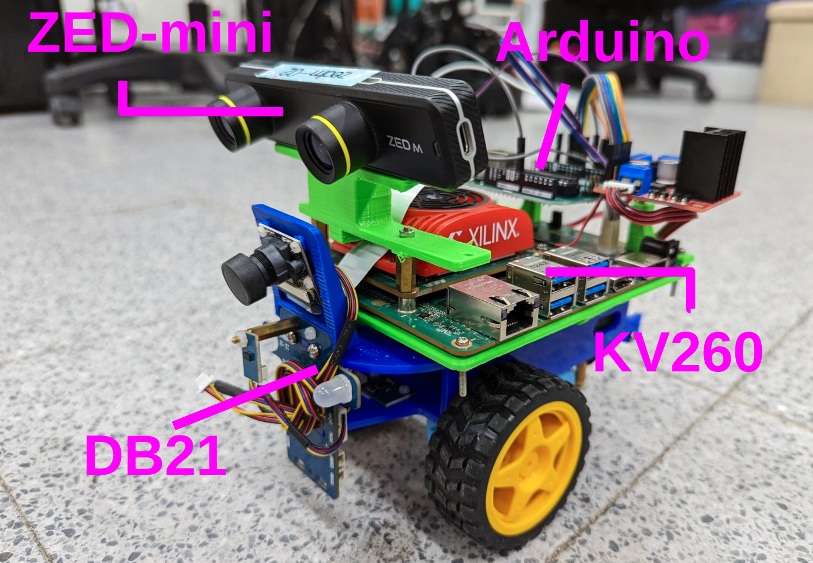
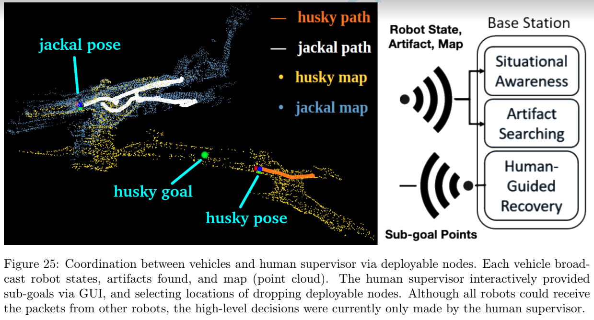

Curriculum Reinforcement Learning from Avoiding Collisions to Navigating among Movable Obstacles in Diverse Environments 2022/03 ~ 2022/07
Parts of this paper was previously entitled “PokingBot: Enabling Real-world Interactive Navigation via Curriculum Reinforcement Learning for Search and Rescue Missions,” but we have made significant changes.
In this paper, we ranked the navigation difficulty metrics of various large-scale representative environments and trained DRL policies from scratch within a certain computation budgets. We found that low difficulty environments received high rewards, in particular in a relatively open tunnel-like environment that only required wall following. To facilitate more complex policies in NAMO task, we leveraged curriculum learning built upon pre-trained policies, and developed pace functions appropriate to the difficulty of the environment. The proposed scheme proved highly effective to train a local planner capable of clearing the path of movable obstacles. Comprehensive evaluations were assessed in experiments conducted in simulated and real environments .
DB21 KV260 version 2021/03 ~ 2021/05

Modify the origin DB21 by substituting Xilinx KV260 for the computing unit NVIDIA Jetson Nano. Add a stereo camera ZED-mini as a depth sensor and an Arduino for motor control.
In this project, I made a ROS wrapper for the ZED camera driver, which could run without CUDA since the official version could not. I also build a motor control system and a ROS wrapper for it (UART communication between KV260 and Arduino).
(Unfinished, still in progress) Using the Xilinx Vitis High Level Synthesis tool and Vitis Vision library to make an FPGA-accelerated adaptation of the SGBM stereo matching algorithm.
PokingBot: Enabling Real-world Interactive Navigation via Curriculum Reinforcement Learning for Search and Rescue Missions 2021/12 ~ 2022/02
In this paper, we proposed the PokingBot system, consisting of a deep RL agent for mobile robot with a manipulator. The agent was trained through continuous control via a sample efficient curriculum learning settings. We included two curriculum designs by starting training from basic navigation skills such as obstacle avoidance and goal navigation, toward more complex skills about interactive with movable objects. Our experiment showed that a virtual Matterport 3D and its counterpart real environments were a valid testing scheme for interactive navigation.
We used an obstacle-avoidance-only DRL policy and a state-of-the-art planner TARE as baselines. We verified that our method performed better than the baselne methods when dealing with movable obstacles. In real-robot experiments, the qualitative results of our method showed that our method can implement in real robot and real world scenarios. Finally We suggested that the learned policies could operate robustly in a large-scale, unseen environment in the virtual SubT Urban Circuit nuclear power plant.
Robot Unboxing 2022/02
This is an unboxing video introducing the robot Husky and our research, especially the application of DRL algorithms on UGV.
DRL for obstacle avoidance and goal navigation 2021/07 ~ 2021/08
PyTorch implementation of various algorithms such as RDPG, DDPG, D4PG, etc.
DRL agents were trained by interacting with simulation environment via Gazebo simulator.
Pyrobot in Simulation 2021/07
Use Pyrobot LoCoBot in Gazebo simulator to finish tasks.
In the first video, use DOPE algorithm for object pose estimation and pick them up.
In the second video, use AprilTags for pose estimation and the A* path planning algorithm for navigation to reach goal.
In the third video, there is a combined task that the robot has to identify the object and pick it up, then move to the target location and place the item.
Coordinating UGVs via XBee Communication 2021/04

Created an ROS core for each robot, and communication was handled by XBee.
Coordination was performed by a human supervisor (at a base station) using a graphic user interface (GUI) to assign sub-goal points pertaining to each vehicle.
Real-time mapping results sent back from multiple robots were used by the human supervisor to assign sub-goals in unexplored regions, whereupon the DRL goal navigation model was used to perform autonomous navigation.
D435 camera pointclouds clustering 2021/03
Implement DBSCAN clustering algorithm for robotics task. Cluster pointclouds and find the center of each group.
Defusing Dangerous Article Robot 2020/09
Use mouse click coordinates on image in GUI, or the detection result from MobileNet SSD to find article.
Transform the 2D pixel location from a depth image to the article's 3D pose.
Use the A* path planing algorithm as the basis to control the robot's movement.
ASA_M128 self-driving car lane following 2019/02 ~ 2019/06
v
Use infrared sensors for motion decision of the car for lane-following tasks.
During the course, I was a TA, who teached students about C programming skills, microcontroller IO ports read/write operations and the autonomous control method.
Humanoid Robot Control System Redesign 2018/09 ~ 2018/12
Replace the core of KONDO KHR-3HV with our microcontroller, ASA_M128.
Design a control system and built the power, communication and data storage systems.
Implemented the system in a C program and designed a GUI in Python.